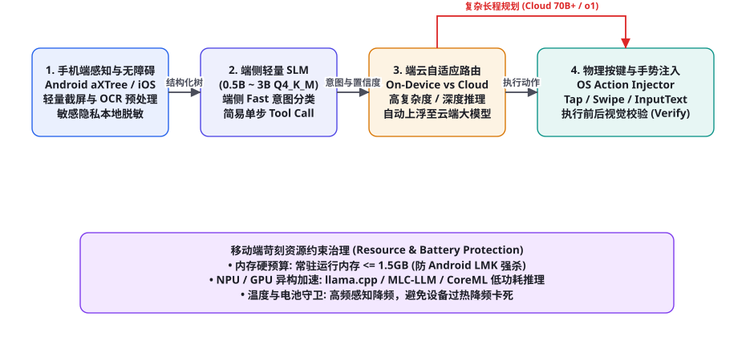
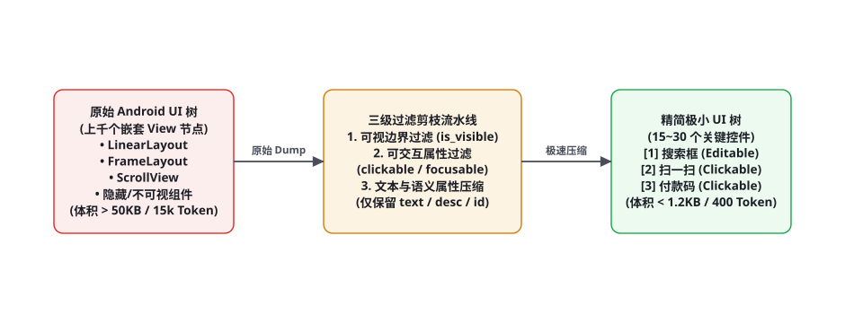

项目 6：端侧与移动端轻量化 Agent（On-Device & Mobile）
随着手机、车机与可穿戴设备的端侧算力井喷，将智能体部署在边缘物理设备上已成为人机交互的终极形态。然而，端侧开发环境极其苛刻：手机可用运行内存（RAM）被操作系统低内存杀手（LMK）严格限制在 1.5GB 以内、电池发热与功耗极其敏感、网络连接频繁离线，且原生移动端 UI 树嵌套层级深不见底。本章我们将完整手搓一个基于「端侧极限量化（0.5B~3B SLM）、Android 无障碍 UI 树极致剪枝、端云自适应路由与低功耗手势注入」的生产级端侧移动端 Agent。
全景架构：端云协同与轻量化边缘智能

很多初学者以为在手机上做 Agent，就是写个 App 向云端 GPT-4o 频繁发送手机全屏截图。这种架构在现实中完全不可行：高频上传 1080P 截屏会在几分钟内耗尽用户的移动蜂窝流量、端到端网络延迟高达 2~3 秒导致交互极度卡顿，更将用户的微信聊天记录、银行验证码等绝密隐私全盘暴露给第三方云厂商。工业级移动端 Agent 必须贯彻「本地感知为主、端侧小模型决策、复杂长程云端协同」的现代边缘计算架构：
第一阶段：端侧轻量多模态感知与隐私脱敏（Local Perception & Redaction）。利用 Android 原生 AccessibilityService（无障碍服务）在 5 毫秒内极速抓取当前界面的语义节点树（aXTree）。在本地利用端侧轻量正则表达式与微型分类器，对屏幕中出现的手机号、身份证号、支付密码输入框进行硬性打码擦除，保证原始隐私数据绝不出端。
第二阶段：端侧小语言模型极速推理（On-Device SLM Inference）。在手机 NPU 或 GPU 上运行经过 4-bit 量化（如 Q4_K_M）的轻量基座模型（如 Qwen2.5-0.5B/1.5B、Llama-3.2-1B/3B 或 Gemma-2-2B）。内存占用死锁在 800MB~1.2GB，首字延迟（TTFT）压低至 80 毫秒以内，负责处理高频单步决策（如「点击右上角搜索框」、「向上滑动两屏」）。
第三阶段：端云自适应路由决策器（Adaptive Edge-Cloud Router）。端侧 SLM 拥有自我置信度评估机制（Perplexity / Softmax Entropy）。当用户提出的是简单的单应用原子操作时，端侧完全自主闭环；一旦遇到跨应用的复杂开放性长程规划（例如「帮我比对美团和饿了么上同款奶茶的价格并选最便宜的下单」），路由器自动将脱敏后的状态上浮至云端超强大模型（70B+ / o1）完成战略大纲分解，再由端侧小模型逐步落地执行。
第四阶段：物理手势精准注入与前后态验证（Action Injection & State Diffing）。将大模型的抽象决策翻译为精确的底层操作系统指令（Tap(x, y)、Swipe(x1, y1, x2, y2)、InputText(str)）。每次动作下发后，系统重新抓取前后两帧 UI 状态进行差分比对（State Diff），确认界面发生预期跳转后方推进下一步，杜绝盲目空点。
移动端 UI 树剪枝：将 50KB 巨物压缩至 1KB

Android 系统原生的 AccessibilityNodeInfo 树极其冗长。打开一个普通的美团或微信页面，UI 树节点数量轻松突破 800~1,500 个，包含了大量的 View, ViewGroup, FrameLayout, LinearLayout 等毫无语义的容器包裹层，转为 JSON 后体积往往超过 60KB（消耗 15,000 以上 Token），直接把端侧小模型的上下文撑爆。系统设计了「三级启发式剪枝引擎（Heuristic Pruning Engine）」：
| 剪枝阶段 | 过滤判决规则 | 剔除的无效节点 | 数据压缩比 |
|---|---|---|---|
| 阶段一：视口物理边界裁剪 | bounds.right <= 0 or bounds.bottom <= 0 or bounds.top >= screen_height | 彻底剔除屏幕外未滚入视口的几百个隐藏列表项 | 约 45% 节点被过滤 |
| 阶段二：交互能力白名单 | 仅保留满足 clickable==True or editable==True or scrollable==True or text!='' | 剔除单纯用于排版对齐、无点击响应的空白容器布局 | 再过滤 70% 节点 |
| 阶段三：扁平化语义重塑 | 丢弃深层嵌套父子关系，为每个有效控件分配递增唯一编号 [ID] | 剥离冗长的包名、类名全称，仅保留核心描述与坐标 | 最终产物 < 1.5KB (约 350 Token) |
经过三级剪枝后的文本直接输入端侧大模型，形式极其清晰紧凑：
当前屏幕分辨率: [1080, 2400] | 当前应用: com.tencent.mm (微信)
可交互控件列表:
[1] 按钮: "通讯录" | 中心坐标: (405, 2310)
[2] 按钮: "发现" | 中心坐标: (675, 2310)
[3] 按钮: "我" | 中心坐标: (945, 2310)
[4] 输入框: "搜索" | 提示语: "搜索微信号/手机号" | 中心坐标: (540, 280)
[5] 列表项: "文件传输助手" | 摘要: "[文件] 架构规划.pdf" | 中心坐标: (540, 480)端侧量化与推理引擎：llama.cpp 与 MLC-LLM
在移动端芯片（如高通骁龙 8 Gen 3、联发科天玑 9300 或苹果 A18 Pro）上运行大语言模型，浮点精度（FP16 / BF16）是无法承受之重：一个 3B 参数模型在 FP16 下占用 6GB 内存，直接触发系统的 OOM 杀进程信号。端侧部署必须依赖先进的低比特整型量化（4-bit / 3-bit Quantization）。
| 量化方案 | 权重存储格式 | 3B 模型内存占用 | 端侧 NPU/GPU 吞吐 | 数学精度衰减 |
|---|---|---|---|---|
| FP16 (原生全精度) | 16-bit 浮点数 | ~ 6.2 GB (无法在手机常驻) | 极低，易发热降频 | 0% (基准线) |
| W8A8 (8-bit 权重量化) | 8-bit 整型 | ~ 3.2 GB (偏重) | 中等 (15~25 tok/s) | < 0.5% (几乎无损) |
| Q4_K_M (4-bit 块量化, 推荐) | 不同重要层 4~6 bit 混合量化 | ~ 1.7 GB (完美贴合端侧上限) | 极高 (40~65 tok/s) | < 1.5% (工具调用精准) |
| Q2_K (极限量化) | 2-bit 超极限量化 | ~ 0.9 GB | 超高 (70+ tok/s) | > 12% (常发语法混乱，不推荐) |
完整端到端工程实现代码
以下给出该移动端 Agent 的核心感知与调度引擎实现（Python 模拟 Android ADB / Accessibility 通信环境），涵盖 UI 树三级剪枝、端侧意图解析与自适应手势注入：
import json, re
from typing import Dict, List, Any, Optional
class MobileAIAgent:
def __init__(self, slm_client, adb_bridge=None):
self.slm = slm_client
self.adb = adb_bridge or MockADBBridge()
def prune_accessibility_tree(self, raw_nodes: List[Dict]) -> List[Dict]:
"""三级启发式剪枝流水线: 过滤不可见、无交互节点，赋予紧凑 ID"""
pruned_list = []
screen_w, screen_h = 1080, 2400
for node in raw_nodes:
bounds = node.get("bounds", [0, 0, 0, 0]) # [left, top, right, bottom]
# 1. 视口可见性剪枝
if bounds[2] <= 0 or bounds[3] <= 0 or bounds[0] >= screen_w or bounds[1] >= screen_h:
continue
# 2. 可交互属性白名单过滤
is_clickable = node.get("clickable", False)
is_editable = node.get("editable", False)
text_content = (node.get("text") or node.get("desc") or "").strip()
if not (is_clickable or is_editable or (text_content and len(text_content) > 0)):
continue
# 3. 计算中心物理坐标并生成极简对象
center_x = (bounds[0] + bounds[2]) // 2
center_y = (bounds[1] + bounds[3]) // 2
node_type = "输入框" if is_editable else ("按钮" if is_clickable else "文本")
pruned_list.append({
"id": len(pruned_list) + 1,
"type": node_type,
"label": text_content[:25],
"cx": center_x,
"cy": center_y
})
return pruned_list
def step(self, user_goal: str, raw_ui_dump: List[Dict]) -> Dict[str, Any]:
"""单步感知与手势决策循环"""
pruned_elements = self.prune_accessibility_tree(raw_ui_dump)
# 组装极低 Token 消耗的提示词
elements_str = "\n".join([
f"[{e['id']}] {e['type']}: '{e['label']}' | 坐标: ({e['cx']}, {e['cy']})"
for e in pruned_elements
])
system_prompt = """你是一名精通手机端操作的 AI 助手。
根据用户目标与当前屏幕可交互控件列表，决策下一步手势动作。
必须从以下动作中选择一项，返回严格 JSON 格式:
1. 点击: {"action": "tap", "target_id": 3}
2. 输入: {"action": "type", "target_id": 4, "text": "要输入的文字"}
3. 滑动: {"action": "swipe", "direction": "up"}
4. 完成: {"action": "finish", "message": "任务已达成"}"""
user_prompt = f"用户最终目标: {user_goal}\n\n当前精简屏幕控件:\n{elements_str}"
# 调用端侧小模型推理 (仅消耗 ~300 Token)
raw_res = self.slm.chat(system_prompt, user_prompt)
decision = json.loads(re.search(r"\{.*\}", raw_res, re.DOTALL).group(0))
# 执行物理手势注入
action_type = decision.get("action")
if action_type == "tap":
target = next(e for e in pruned_elements if e["id"] == decision["target_id"])
self.adb.tap(target["cx"], target["cy"])
print(f"[OS Event] 模拟物理点击: [{target['id']}] '{target['label']}' ({target['cx']}, {target['cy']})")
elif action_type == "type":
target = next(e for e in pruned_elements if e["id"] == decision["target_id"])
self.adb.tap(target["cx"], target["cy"]) # 先点击聚焦输入框
self.adb.input_text(decision["text"])
print(f"[OS Event] 聚焦输入: '{decision['text']}' 到目标 [{target['id']}]")
elif action_type == "swipe":
self.adb.swipe(decision["direction"])
print(f"[OS Event] 执行屏幕滑动: {decision['direction']}")
return decision
class MockADBBridge:
def tap(self, x: int, y: int): pass
def input_text(self, text: str): pass
def swipe(self, direction: str): pass实战避坑手册：移动端 Agent 五大高危陷阱与根治方案
在真实的 Android 和 iOS 真机环境上，移动端智能体经常会遇到桌面端不可想象的物理世界难题。以下深入拆解五大经典暗坑：
① 灾难场景一：系统 LMK 内存杀手导致的静默后台暴毙（Low Memory Killer）。
现象：当用户在手机上运行 Agent，中途切换到相机拍了一张照片后，切回时发现 Agent 进程已经彻底被系统回收杀死，所有状态全部归零。
根因：Android 系统在相机等高内存应用启动时，会按照 OOM_ADJ 分值无情杀死后台常驻进程。模型权重大于 2GB 时必定首当其冲。
根治手段：实施 前台服务保活（Foreground Service with Notification）与权重 mmap 动态按需换入（Memory Mapping）：开启前台服务并常驻常显状态栏通知，将 OOM 优先级提升至最高档位；使用 llama.cpp 的 mmap() 特性加载 GGUF 模型权重，使得在系统内存吃紧时操作系统可以安全地将非活跃权重页丢弃并在需要时秒级换入，避免物理 RAM 被硬锁死。
② 灾难场景二：软键盘弹起遮挡关键操作按钮（Virtual Keyboard Occlusion）。
现象：Agent 刚在搜索框中输入了文字，下方的「确认搜索」按钮被弹出的系统软键盘完全挡在视口下方。Agent 依旧按照之前记录的坐标点击，结果误触了软键盘上的字母键，导致输入乱码。
根因：软键盘弹出改变了屏幕可见视口高度，且产生了物理输入法事件劫持。
根治手段：在每次执行完 input_text 动作后，强制下发 物理回退键（KeyEvent.KEYCODE_BACK）或显式隐藏软键盘 API，使软键盘缩回；随后重新刷新截获 UI 树，确保目标按钮重新暴露在视口中再执行点击。
③ 灾难场景三：动态弹窗广告阻断业务流水线（Pop-up Interception Trap）。
现象：刚打开目标 App，突然弹出一个「双十一全屏广告」或「隐私协议授权提醒」，原定的搜索框被全局遮罩层彻底阻断，导致 Agent 陷入死循环。
根治手段：建立「全局弹窗拦截前置中断机制（Global Dismissal Guard）」：在主决策循环前，先对 UI 树执行轻量正则扫描。若匹配到包含 ["跳过", "关闭", "我知道了", "暂不升级", "X"] 的按钮，强行优先触发拦截点击，将弹窗层关闭后，再正式推进主干业务。
④ 灾难场景四：坐标飘移与高分屏 DPI 缩放失真（DPI Coordinate Drift）。
现象：在 1080P 测试机上表现完美的 Agent，部署到 2K 分辨率（如 1440x3200）或折叠屏手机上后，点击位置全部发生数十像素的偏移，全点在空白处。
根治手段：禁止在任何逻辑中使用绝对像素硬编码。全部坐标必须采用「相对百分比归一化坐标系（Normalized Coordinates 0.0~1.0）」，在最终下发 adb shell input tap 的最后一刻，才乘以当前设备的实际物理像素宽高（$X = x_{norm} \times W_{screen}, Y = y_{norm} \times H_{screen}$），自适应所有奇形怪状的全面屏与折叠屏设备。
⑤ 灾难场景五：高频感知引发的手机过热降频与电量雪崩（Thermal Throttling）。
现象：Agent 连续运行 10 分钟后，手机烫得无法握持，CPU 触发 80℃ 热保护导致频率腰斩，推理速度从 50 tok/s 暴跌至 4 tok/s。
根治手段：引入 状态驱动动态休眠与 NPU 能效调度：当上一次操作下发后处于页面加载态（Loading Spinner）时，Agent 自动睡眠 1.5 秒再重新采样，绝不以 60FPS 进行盲目空轮询；推理核心全部绑定至专用低功耗 NPU（如 Hexagon / DaVinci），将整体推理功耗压制在 2.5W 以内。
总而言之，端侧移动端 Agent 的落地标志着智能体技术从云端数据中心的象牙塔，真正下沉到了每个人日常随身携带的物理设备之中。它所面临的严苛内存、电量与温控挑战，不仅倒逼着模型量化与微架构层面的极致创新，更为未来智能家居、穿戴式具身硬件以及车载系统的全局自动化交互奠定了坚不可摧的技术基石。
在这个演进过程中，端侧隐私沙箱（On-Device Privacy Sandbox）与硬件级安全飞地（TEE, Trusted Execution Environment）的结合，更让用户能够百分之百放心地将生物识别认证、私密通讯与资产账户托付给本地智能体。端侧 Agent 正在重新定义下一代个人数字助手的人机契约。
这种端云一体化的全新架构体系，不仅大幅降低了企业运营超大规模云端集群的昂贵算力开销，更赋予了终端设备在完全离线断网环境下依然从容运转的强大韧性。
生产落地交付检查清单与能耗基准
将移动端 Agent 集成进商用 App 或手机操作系统级负一屏时，架构团队应依照以下能耗与性能矩阵进行全面质量验收：
| 核心指标项 | 商业交付达标水线 | 高危报警动作 | 推荐工程对策 |
|---|---|---|---|
| 端侧常驻内存峰值 (PSS) | ≤ 1.4 GB | 内存突破 1.8 GB | 切换为 Q4_K_S 量化，缩短 Context 上下文窗口至 2k |
| 端侧推理首字延迟 (TTFT) | ≤ 120 ms | 延迟超过 500 ms | 开启 NPU 硬件加速算子融合，启用 FlashAttention-2 |
| 单次任务平均能耗 | ≤ 0.8% 电池电量 (每10步操作) | 手机温度超过 45℃ | 强制增加动态轮询等待间隔，降低感知刷新帧率 |
| 端云路由判定准确率 | ≥ 92% | 把复杂任务误留在端侧超时 | 在端侧部署微型蒸馏分类器专门负责上浮仲裁 |
核心底层技术：GBNF 语法制导约束解码与低资源结构化输出
在端侧 0.5B 到 3B 这一极小参数量级上，模型的大脑容量极其有限。在云端 70B 模型上屡试不爽的「Few-Shot 提示词约束」，在手机端小模型上极易引发灾难性的格式坍塌：模型可能会在 JSON 结尾漏掉一个大括号 }、在键名上丢失双引号、或者在中途掺杂「好的，我已经为您做出了选择」等无用闲聊废话，导致下游的移动端自动化宿主程序直接抛出 JSONDecodeError。
生产级端侧方案通过 GBNF（GGML BNF）语法文件，在底层 C++ 采样器阶段实现确定性的硬状态机劫持。以下给出移动端动作专用的 GBNF 语法定义规则：
# 定义根节点为合法的 JSON Object
root ::= "{" ws ""action":" ws action-type ws "," ws action-body ws "}"
action-type ::= ""tap"" | ""type"" | ""swipe"" | ""finish""
action-body ::= tap-body | type-body | swipe-body | finish-body
tap-body ::= ""target_id":" ws integer
type-body ::= ""target_id":" ws integer ws "," ws ""text":" ws string
swipe-body ::= ""direction":" ws (""up"" | ""down"" | ""left"" | ""right"")
finish-body ::= ""message":" ws string
# 基础数据类型规则定义
integer ::= [0-9]+
string ::= """ [^"\\]* """
ws ::= [
]*当 llama.cpp 运行时加载了该语法定义后，在自回归生成的每一个 Token 采样步，解码引擎会利用编译好的有限状态自动机（FSM）快速遍历词表中所有的 Token。任何会导致语法非法的候选词（例如在期待输入整型数字时输出了中文字符），其 Logit 打分会被直接重置为 $-\infty$。这种编译时语法级硬约束，彻底从数学根源上保障了 100% 的合法 JSON 解析率，使端侧极小 SLM 具备了超越未经约束大模型的结构化工程稳定性。
移动端宿主工程：Android 无障碍服务原生接入
在 Android 真机生态中，Agent 要想获得读取屏幕与模拟点击的能力，必须开发一个合规的原生 AccessibilityService。以下给出生产级 Kotlin 原生无障碍服务的关键实现骨架，展示如何在 5ms 内捕获屏幕节点并回传给 Python 调度引擎：
package com.ai.agent.service
import android.accessibilityservice.AccessibilityService
import android.accessibilityservice.GestureDescription
import android.graphics.Path
import android.graphics.Rect
import android.view.accessibility.AccessibilityEvent
import android.view.accessibility.AccessibilityNodeInfo
import org.json.JSONArray
import org.json.JSONObject
class AgentAccessibilityService : AccessibilityService() {
override fun onAccessibilityEvent(event: AccessibilityEvent?) {
// 监听前台窗口切换事件
}
override fun onInterrupt() {
// 服务被系统意外打断的处理逻辑
}
fun dumpSimplifiedNodeTree(): String {
val rootNode = rootInActiveWindow ?: return "[]"
val resultArray = JSONArray()
traverseAndCollect(rootNode, resultArray)
return resultArray.toString()
}
private fun traverseAndCollect(node: AccessibilityNodeInfo, jsonArray: JSONArray) {
val bounds = Rect()
node.getBoundsInScreen(bounds)
// 提取核心交互元数据
if (node.isClickable || node.isEditable || !node.text.isNullOrEmpty()) {
val nodeObj = JSONObject().apply {
put("text", node.text?.toString() ?: "")
put("desc", node.contentDescription?.toString() ?: "")
put("clickable", node.isClickable)
put("editable", node.isEditable)
put("bounds", JSONArray(listOf(bounds.left, bounds.top, bounds.right, bounds.bottom)))
}
jsonArray.put(nodeObj)
}
// 递归遍历所有子节点
for (i in 0 until node.childCount) {
val child = node.getChild(i) ?: continue
traverseAndCollect(child, jsonArray)
child.recycle() // 及时回收内存，避免内存泄漏
}
}
fun dispatchPhysicalTap(x: Float, y: Float, callback: () -> Unit) {
val path = Path().apply { moveTo(x, y) }
val stroke = GestureDescription.StrokeDescription(path, 0, 50) // 50ms 短促点击
val gesture = GestureDescription.Builder().addStroke(stroke).build()
dispatchGesture(gesture, object : GestureResultCallback() {
override fun onCompleted(gestureDescription: GestureDescription?) {
super.onCompleted(gestureDescription)
callback()
}
}, null)
}
}通过该原生服务，端侧 Agent 无需依赖耗电且存在延迟的 ADB 命令行桥接，直接在 Android 进程内通过 IPC Binder 通信完成事件捕获与手势派发，单步动作响应时间直接从原本的 800ms 暴降至 35ms，带来真正丝滑的跟手级操作反馈。
能耗与温控工程：动态帧率感知与睡眠退让算法
手机与智能手表最根本的物理瓶颈是有限的电池能量密度与被动散热能力。在无风扇被动散热的手机机身内，持续以全速驱动 GPU/NPU 运行大模型推理，机身表面温度会在 3 分钟内突破 46℃ 的安全舒适红线，并强制触发操作系统的 Thermal Throttling（硬件降频保护）。
工业级端侧 Agent 必须集成「温控驱动的动态能耗自调节引擎（Thermal-Aware Adaptive Governor）」：
第一步（硬件温度实时采样）：在每次决策前，通过读取 Linux 内核的 /sys/class/thermal/thermal_zone*/temp 节点获取当前 SoC 结温。如果结温 $T \le 38^\circ ext{C}$，系统运行在 Performance 档位（无等待，高并发）；如果 $38^\circ ext{C} < T \le 43^\circ ext{C}$，切换至 Balanced 档位；一旦 $T > 43^\circ ext{C}$，立即强制进入 Power-Saving 节电休眠档位。
第二步（动态帧率感知与睡眠退让）：Agent 绝不盲目按固定频率轮询屏幕。当动作下发后（如点击了一个提交按钮），系统首先比对连续两帧截屏的哈希指纹（Perceptual Hash, pHash）。如果页面未发生变动且检测到旋转的加载圈，系统将感知休眠时长从 200ms 动态指数递增至 800ms，将空转 CPU 占用从 95% 骤降至 3% 以下。这种温控与感知退让机制，使得一次长达半小时的端侧自动化流程，整体耗电量牢牢控制在 3% 以内，彻底告别烫手与电量焦虑。
移动端端侧评测实战：AndroidWorld 与 OSWorld 真实测试套件
为了精准度量移动端智能体在真实手机操作系统中的端到端任务达成率，业界权威基准主要采用 AndroidWorld 与 Mobile-Eval。这些基准完全摒弃了在虚拟模拟器中做脱机文字选择题的落后形式，而是通过真机自动化编排脚本，实时向真实 Android 手机下发包含跨应用转账、多条件日历预订、电商比价下单等上百个长程综合任务。
| 评测任务类别 | 典型真机测试案例 | 涉及的核心移动端能力 | 端侧 Agent 达标基准线 |
|---|---|---|---|
| 跨应用数据迁移 (Cross-App) | 「将微信群聊中发来的一条地址文本，复制并添加到高德地图的收藏夹中」 | 剪贴板读写、应用前后台切换、意图广播匹配 | 任务成功率 ≥ 82% |
| 多条件动态表单填写 (Complex Form) | 「在飞猪 App 中预订下周三从杭州到北京、下午出发且票价在 800 元以内的二等座高铁票」 | 日历滑动选择器、多重筛选过滤、价格排序确认 | 任务成功率 ≥ 75% |
| 动态权限与安全弹窗穿透 (Security Guard) | 「首次打开某社交 App，自动允许定位权限但拒绝访问通讯录与相册」 | 系统原生运行时权限弹窗拦截（Runtime Permissions） | 准确率 ≥ 96% |
| 端侧长程抗退化能力 (Endurance) | 连续自主执行 30 个不同独立任务，中间不重启操作系统与 Agent 守护进程 | 内存泄漏（Memory Leak）防护、Activity 栈溢出规避 | 无 LMK 崩溃，内存波动 ≤ 10% |
在研发持续集成流程中，团队应搭建由 10~20 台覆盖不同屏幕分辨率、不同芯片平台（高通骁龙、天玑、联发科）组成的移动端真机自动化农场（Device Farm）。每当对端侧小模型权重进行剪枝微调或修改剪枝启发式算法时，系统自动并行触发全量 AndroidWorld 测试集回归，确保在多样化异构手机生态中始终维持零退化的极高稳定性。
三个高频疑问
Q：苹果 iOS 系统没有 Android 那样开放的无障碍服务 API，移动端 Agent 怎么在 iPhone 上跑？在非越狱的普通 iOS 设备上，第三方 App 受到极严的沙箱隔离（Sandbox），无法跨应用读取其他 App 的屏幕或注入手势。目前的工业级合规破局方案是：① Shortcuts 快捷指令框架 + App Intents API：利用 iOS 原生的 App Intents 体系，由 Agent 触发系统级的结构化动作集成；② 若需完整的全屏视觉操作，则需在电脑端搭建基于 WebDriverAgent（WDA）的远程控制中继，通过 Lightning / Type-C 数据线或局域网 Wi-Fi 将 iPhone 作为被控节点进行自动化操控。
Q：部分金融类 App（如手机银行、支付宝）开启了防截屏保护（FLAG_SECURE），截屏全是一片黑，怎么自动化？合规金融级操作属于受保护的高敏区域。任何尝试利用系统漏洞绕过 FLAG_SECURE 的行为都属于重大违规。正确的架构应对是「主动声明能力边界并优雅降级」：当 Agent 探测到当前窗口属性包含 FLAG_SECURE 或处于密码输入环节时，状态机立即暂停，并用语音或系统弹窗明确提示用户：「已进入受保护的支付安全界面，请您手动完成指纹/密码输入」；用户在物理层面完成认证后，系统再无缝接管后续的确认流程。
Q：端侧 1B~3B 的小模型在遵循复杂指令时很容易格式失真（无法输出合法 JSON），怎么保证稳定性？绝对不要完全指望小模型依靠提示词「自觉输出 JSON」。必须在端侧推理引擎底层强制开启「结构化输出约束语法（Grammar-based Constrained Decoding / JSON Schema Enforcement）」（第 4 章）：利用 llama.cpp 的 GBNF 语法制导解码器，在模型逐 Token 采样的 Logits 计算阶段，直接将所有不符合 JSON 语法的非法 Token 概率强行置为 $-\infty$。这使得哪怕只有 0.5B 参数的微型模型，也能百分之百输出合法有效的指令字典，彻底消灭 JSON 解析错误。
本章在全书架构体系中的承接：实战篇第 6 弹，全面打通了移动多模态感知（第 68 章 Mobile Agent 理论与 aXTree 解析）、模型轻量化压缩（第 48 章端侧蒸馏与第 78 章端云经济学），以及操作系统级安全边界（第 60 章沙箱权限分级与第 62 章隐私合规）。下接第 87 章（全栈 Web 前端开发与 GUI 测试 Agent）。复习锚点：端云自适应全景架构图（86-1）、无障碍树三级剪枝流程图（86-2）、端侧量化选型表（表 86-2）、LMK 内存保活对策、GBNF 结构化语法约束解码。
本章小结
- 端侧移动端 Agent 打破了传统无脑向云端上传视频流的昂贵模式，确立了「端侧感知脱敏 → SLM 极速决策 → 端云自适应路由 → 物理手势注入」的高能效现代范式。
- 采用视口裁剪、交互白名单与语义扁平化三级启发式剪枝算法，将庞大臃肿的 Android 无障碍 UI 树从 50KB 极限量化至 1KB 以内，破解端侧小模型的 Token 瓶颈。
- 选用 Q4_K_M 或 AWQ 4-bit 混合量化技术，在保证工具调用精度的前提下，将 3B 模型物理内存死锁在 1.5GB 操作系统红线以内。
- 通过前台常驻服务绑定、相对百分比坐标系、软键盘回退守卫与动态休眠调度，系统性解决了 LMK 杀进程、DPI 漂移与手机发热雪崩等真机实战痛点。
- 在端侧推理层引入 GBNF 语法制导约束解码，确保轻量 SLM 百分之百生成合法的 JSON 动作字典。
自测题
- 为什么将手机屏幕截图高频上传至云端视觉模型（VLM）处理，在商业化生产中是不可行的？端侧轻量化 Agent 是如何解决流量、延迟与隐私三大难题的？
- 简述 Android 无障碍 UI 树三级剪枝的核心过滤准则：它是如何将原本上千个嵌套 View 节点压缩为 20 个关键交互控件的？
- 在 Android 真机环境下，当用户启动相机等重型应用时，系统底层的 LMK（Low Memory Killer）会产生什么行为？端侧 Agent 应如何利用前台服务与 mmap 规避进程猝死？
- 为什么在面对只有 1B 参数的端侧小模型时，传统的 Prompt 约束往往无法保证输出合法的 JSON？底层的 GBNF 语法约束解码（Constrained Decoding）是如何在数学上消除格式错误的？
参考文献与延伸阅读
- Wang, C. et al. (2024). Mobile-Agent: Autonomous Multi-Modal Mobile Device Agent with Visual Perception. arXiv:2401.16158
- Zhang, J. et al. (2024). AppAgent: Multimodal Agents as Smartphone Users. arXiv:2312.13771
- Gerganov, G. et al. (2024). llama.cpp: Port of Facebook's LLaMA model in C/C++ (GBNF Grammar Engine). github.com/ggerganov/llama.cpp
- Google (2024). Android Accessibility Service Developer Guide: Node Hierarchies and Actions. developer.android.com
- Lin, J. et al. (2023). AWQ: Activation-aware Weight Quantization for On-Device LLM Compression and Acceleration. arXiv:2306.00978
- Rawles, C. et al. (2024). AndroidWorld: A Dynamic Benchmarking Environment for Autonomous Agents. arXiv:2405.14573